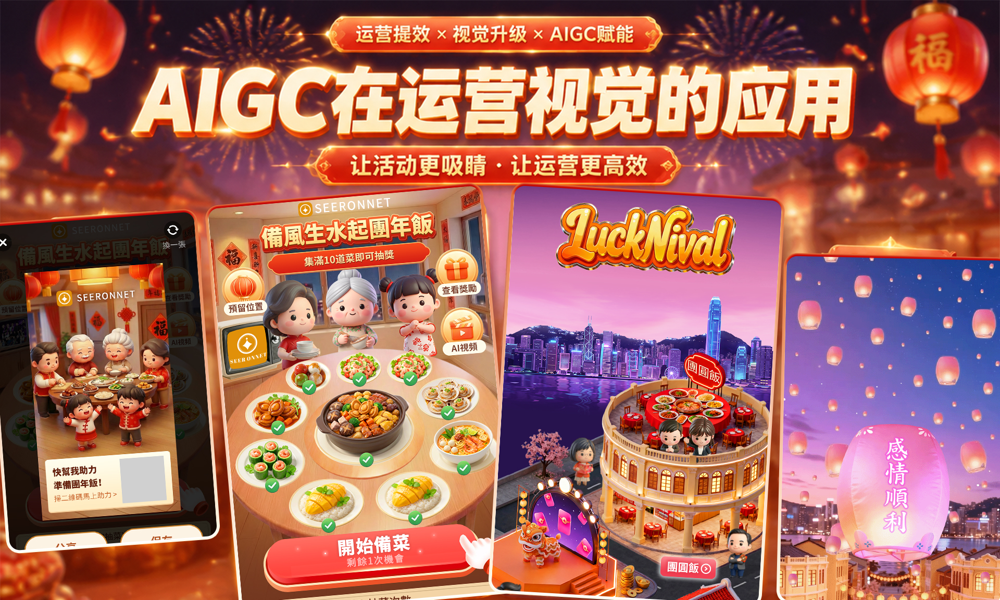

运营活动
视觉设计
AIGC 赋能海外新年活动视觉设计，从主视觉概念、互动场景到落地页与延展素材，形成完整活动表达。

PROJECT OVERVIEW
把 AIGC 变成一套完整活动表达。
从主视觉概念出发，将互动场景、落地页和延展素材纳入同一视觉系统，让海外新年活动在不同触点保持统一且有辨识度。
CAMPAIGN DETAILS
AIGC 赋能海外新年活动视觉设计，从主视觉概念、互动场景到落地页与延展素材，形成完整活动表达。

PROJECT OVERVIEW
从主视觉概念出发，将互动场景、落地页和延展素材纳入同一视觉系统，让海外新年活动在不同触点保持统一且有辨识度。
CAMPAIGN DETAILS